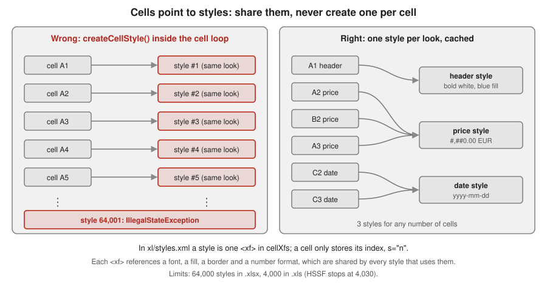

Cell Styles, Fonts & Formats
|
This content was generated with the assistance of AI and should be verified against the official documentation before being relied on in production. |
Baseline date: 2026-10-09. This page was written against Apache POI 5.5.1 (the latest release on that date; 6.0 is
announced but has not been released, so everything said about it here is expected, not final), Java 21 and later. All
examples use the Bookshelf scenario of the section landing page: the
books-inventory.xlsx catalogue with a styled header, a currency column, a date column and a stock count. The workbook
and cell API used by every example is explained in Spreadsheet
Usermodel Basics; how a date or a number is stored and displayed is the topic of
Dates, Numbers & DataFormatter. This page is about the
look of a cell: its style, its font, its format, its colours and borders, and about the one rule that decides whether a
large export works at all: styles are shared, never created per cell.
What a style is, and where it lives
A cell holds a value and a style index. Everything visual (number format, font, fill, borders, alignment, protection)
lives in a style, and the style lives in the workbook, not in the cell. In POI the style is a CellStyle created with
Workbook.createCellStyle() and attached with Cell.setCellStyle(style). Two cells with the same look point to the same
style.
The way POI stores it follows the file format:
| Concern | .xlsx (XSSF, SXSSF) | .xls (HSSF) |
|---|---|---|
Where the styles live |
One part, |
|
What a POI |
One |
One |
What a cell stores |
The attribute |
The XF index in the cell record. |
Maximum number of styles |
64,000 ( |
4,000 by the spec ( |
Colours |
Any RGB value, a theme colour with a tint, or one of the 64 indexed colours. |
The 56-entry palette only (customisable). |
The figure shows why the rule "share styles" exists. A style is a row of a table, not a property of a cell. If the loop
that writes 100,000 prices calls createCellStyle() for each cell, the workbook gets 100,000 identical <xf> rows and
fails at the 64,001st.

Three more facts about how styles combine:
-
Precedence. A cell style wins over a row style (
Row.setRowStyle), which wins over a column style (Sheet.setDefaultColumnStyle). A cell that was never created shows the row or column style. In a verified XSSF test a cell created aftersetDefaultColumnStylestarted with the column style, while a cell created in a row with a row style started with style 0: do not rely on inheritance, assign the style to each cell you create. -
Fonts, fills, borders and formats are shared too. Two styles that differ only in alignment reference the same font and the same number format. XSSF does not merge fonts for you (see Fonts), so share the
Fontobjects as well. -
POI does not remove styles.
WorkbookhascreateCellStyle(),getCellStyleAt(int)andgetNumCellStyles()but no way to delete or compact styles. A workbook loaded from a file keeps all its styles, used or not, and writes them back.
A styled inventory sheet
The first example writes the catalogue with a header style, a text style that wraps, a currency format, an ISO date and a thousands-separated count. Notice the order: fonts first, then one style per kind of cell, then the loop that only assigns them.
import java.io.IOException;
import java.nio.file.Files;
import java.nio.file.Path;
import java.time.LocalDate;
import java.util.List;
import org.apache.poi.ss.usermodel.BorderStyle;
import org.apache.poi.ss.usermodel.Cell;
import org.apache.poi.ss.usermodel.CellStyle;
import org.apache.poi.ss.usermodel.DataFormat;
import org.apache.poi.ss.usermodel.FillPatternType;
import org.apache.poi.ss.usermodel.Font;
import org.apache.poi.ss.usermodel.HorizontalAlignment;
import org.apache.poi.ss.usermodel.IndexedColors;
import org.apache.poi.ss.usermodel.Row;
import org.apache.poi.ss.usermodel.Sheet;
import org.apache.poi.ss.usermodel.VerticalAlignment;
import org.apache.poi.ss.usermodel.Workbook;
import org.apache.poi.xssf.usermodel.XSSFWorkbook;
public class BookshelfHeaderStyles {
record Book(String title, String author, int year, double price, LocalDate acquired, int copies) { }
public static void main(String[] args) throws IOException {
List<Book> books = List.of(
new Book("Dune", "Frank Herbert", 1965, 12.5, LocalDate.of(2024, 3, 14), 4),
new Book("The Left Hand of Darkness: a novel of Gethen", "Ursula K. Le Guin", 1969, 9.99,
LocalDate.of(2024, 5, 2), 2),
new Book("Neuromancer", "William Gibson", 1984, 1234.5, LocalDate.of(2025, 1, 20), 11));
try (Workbook workbook = new XSSFWorkbook()) {
Sheet sheet = workbook.createSheet("Books");
// 1. Fonts first: a style points to a font, so create the font once.
Font headerFont = workbook.createFont();
headerFont.setBold(true);
headerFont.setFontName("Calibri");
headerFont.setFontHeightInPoints((short) 11);
headerFont.setColor(IndexedColors.WHITE.getIndex());
// 2. One style per look, never one per cell.
CellStyle header = workbook.createCellStyle();
header.setFont(headerFont);
header.setFillForegroundColor(IndexedColors.DARK_BLUE.getIndex());
header.setFillPattern(FillPatternType.SOLID_FOREGROUND);
header.setAlignment(HorizontalAlignment.CENTER);
header.setVerticalAlignment(VerticalAlignment.CENTER);
header.setWrapText(true);
header.setBorderBottom(BorderStyle.MEDIUM);
header.setBottomBorderColor(IndexedColors.BLACK.getIndex());
DataFormat formats = workbook.createDataFormat();
CellStyle text = workbook.createCellStyle();
text.setWrapText(true);
text.setVerticalAlignment(VerticalAlignment.TOP);
CellStyle money = workbook.createCellStyle();
money.setDataFormat(formats.getFormat("#,##0.00\\ \"EUR\""));
money.setVerticalAlignment(VerticalAlignment.TOP);
CellStyle date = workbook.createCellStyle();
date.setDataFormat(formats.getFormat("yyyy-mm-dd"));
date.setAlignment(HorizontalAlignment.CENTER);
date.setVerticalAlignment(VerticalAlignment.TOP);
CellStyle count = workbook.createCellStyle();
count.setDataFormat(formats.getFormat("#,##0"));
count.setVerticalAlignment(VerticalAlignment.TOP);
String[] titles = {"Title", "Author", "Year", "Price", "Acquired", "Copies"};
Row headerRow = sheet.createRow(0);
headerRow.setHeightInPoints(24);
for (int c = 0; c < titles.length; c++) {
Cell cell = headerRow.createCell(c);
cell.setCellValue(titles[c]);
cell.setCellStyle(header);
}
int r = 1;
for (Book book : books) {
Row row = sheet.createRow(r++);
Cell title = row.createCell(0);
title.setCellValue(book.title());
title.setCellStyle(text);
Cell author = row.createCell(1);
author.setCellValue(book.author());
author.setCellStyle(text);
Cell year = row.createCell(2);
year.setCellValue(book.year());
Cell price = row.createCell(3);
price.setCellValue(book.price());
price.setCellStyle(money);
Cell acquired = row.createCell(4);
acquired.setCellValue(book.acquired()); // LocalDate overload since POI 4.1
acquired.setCellStyle(date);
Cell copies = row.createCell(5);
copies.setCellValue(book.copies());
copies.setCellStyle(count);
}
sheet.setColumnWidth(0, 30 * 256);
sheet.setColumnWidth(1, 22 * 256);
sheet.setColumnWidth(3, 14 * 256);
sheet.setColumnWidth(4, 12 * 256);
System.out.println("Cell styles in the workbook: " + workbook.getNumCellStyles());
Path out = Files.createTempFile("books-inventory", ".xlsx");
try (var os = Files.newOutputStream(out)) {
workbook.write(os);
}
System.out.println("Written " + out);
}
}
}Output:
Cell styles in the workbook: 6Six are one default style (index 0) and the five created above, however many rows are written. Source: POI Quick Guide, Creating date cells and cell styles, Aligning cells, Fills and colours and Working with fonts.
CellStyle properties
org.apache.poi.ss.usermodel.CellStyle is the common interface of HSSFCellStyle and XSSFCellStyle. Since POI 4.0
every property that has a closed set of values takes an enum: no more short constants.
| Setter | Type | Notes |
|---|---|---|
|
id from |
The number, date or text format. See Data formats. |
|
|
The font of the whole cell. For per-character fonts use rich text (Rich text). |
|
|
|
|
|
Default |
|
boolean |
Breaks long text at the column width. POI does not compute the row height (see the note below). |
|
small non-negative number |
Indent in character widths, for left, right and distributed alignment. |
|
-90 to 90, or 255 for vertical text |
Text rotation in degrees. XSSF stores 0 to 180 internally and POI translates it. |
|
boolean |
Reduces the font size until the text fits the cell. |
|
boolean |
Protection flags. They only take effect when the sheet is protected ( |
|
boolean |
Marks the value as text that must not be re-interpreted when the user edits the cell, as if typed with a leading apostrophe. Useful for identifiers such as ISBNs with leading zeros. |
|
colour index or |
See Colours and fills. |
|
|
See Borders. |
|
another style, even of another workbook |
Copies every property. See Reading and copying styles. |
setWrapText(true) only tells the spreadsheet program to wrap. POI never measures text, so it cannot set the row height
for you. When the row has no explicit height, Excel and LibreOffice usually recalculate it on opening; when you call
Row.setHeight or setHeightInPoints you freeze it and wrapped text may be cut off. Do not set a height on a row that
holds wrapped text unless you also compute it yourself. Sheet.autoSizeColumn does not take merged regions into account by default and is slow for large sheets; see
Sheet Layout & Printing.
Fonts
A Font is created by Workbook.createFont() and attached to a style with CellStyle.setFont. It is a workbook-level
object like a style.
| Property | Setter | Notes |
|---|---|---|
Name, size |
|
The name is a plain string; POI does not check that the font exists on the reader’s machine. The default of a new .xlsx workbook is Calibri 11. |
Weight, slant |
|
|
Underline, strike-through |
|
The |
Super and subscript |
|
|
Colour |
|
See Colours and fills. |
Charset |
|
Rarely needed. |
Two facts decide how you handle fonts:
-
Fonts are not de-duplicated by
createFont(). In a verified test, three calls tocreateFont()with identical settings on an XSSF workbook added three fonts. A font per cell has the same effect as a style per cell. -
The limits differ by format. HSSF throws
IllegalArgumentException: Maximum number of fonts was exceededat 32,767 fonts; POI itself does not check XSSF (a test created 70,000 fonts without error), but Excel documents a much lower limit in its specifications and limits page and may repair or reject a file with too many. Treat the Microsoft figure, not the absence of an exception, as the limit.
Workbook.getNumberOfFonts() returns the count and Workbook.getFontAt(int) returns a font by index (the short
variants and getNumberOfFontsAsInt() are deprecated in 5.5).
Data formats
A number format is a format code such as #,##0.00 stored once in the workbook. DataFormat.getFormat(String) returns
its id and registers it on first use. Calling it again with the same code returns the same id (a verified test returned
the same ids for repeated codes), so it is safe to call inside a loop, but it is cleaner to resolve the id once.
-
Built-in formats have fixed ids below 164 and are listed in
BuiltinFormats.getFormatreturns the built-in id when the code matches one, so#,##0is id 3 (thecountstyle in the example above), not a new custom format. -
Custom formats get ids from 164 on in .xlsx (the example above registers the EUR and date codes as 164 and 165).
-
The code is stored in the invariant (US) notation, with
.as decimal separator and,as group separator. The display is localised by the program that opens the file: a German Excel shows12,50 EURfor#,##0.00\ "EUR".
| Id | Format code | Meaning |
|---|---|---|
0 |
|
Default; Excel picks the representation. |
2 |
|
Two decimals. |
3 |
|
Integer with thousands separator. |
4 |
|
Two decimals with thousands separator. |
9, 10 |
|
Percentage (the value 0.25 shows as 25%). |
14 |
|
Locale-dependent short date: Excel shows it in the user’s regional pattern. Prefer an explicit code such as
|
49 |
|
Text. A numeric cell with this format is shown as typed. |
A format code with a literal needs quoting or escaping inside the code: #,##0.00\ "EUR" in Java source is written
"#,##0.00\\ \"EUR\"". Sections separated by semicolons choose the format for positive, negative, zero and text values
(#,##0.00;[Red]-#,##0.00). The complete code table, date and time codes, and how DataFormatter renders a value
back to text are in
Dates, Numbers & DataFormatter.
A format changes only the display. A cell that holds the double 1234.5 with #,##0.00\ "EUR" still holds
1234.5; a reader that uses getNumericCellValue() gets the raw number.
Colours and fills
Colours are the part of the API that differs most between the two families.
| Where | API | Notes |
|---|---|---|
Both (portable) |
|
A fixed palette: 56 usable entries in .xls, the same legacy names in .xlsx. Works on every |
.xlsx only |
|
Any 24-bit RGB colour. Get the |
.xlsx theme colours |
|
The colour follows the workbook theme (the accent colours of Excel) and a tint between -1 and 1 darkens or lightens it. |
.xls only |
|
A fixed palette of 56 colours. |
import java.io.IOException;
import java.nio.file.Files;
import java.nio.file.Path;
import org.apache.poi.hssf.usermodel.HSSFPalette;
import org.apache.poi.hssf.usermodel.HSSFWorkbook;
import org.apache.poi.hssf.usermodel.HSSFCellStyle;
import org.apache.poi.hssf.util.HSSFColor;
import org.apache.poi.hssf.util.HSSFColor.HSSFColorPredefined;
import org.apache.poi.ss.usermodel.Cell;
import org.apache.poi.ss.usermodel.CreationHelper;
import org.apache.poi.ss.usermodel.FillPatternType;
import org.apache.poi.ss.usermodel.RichTextString;
import org.apache.poi.ss.usermodel.Sheet;
import org.apache.poi.ss.usermodel.Workbook;
import org.apache.poi.xssf.usermodel.IndexedColorMap;
import org.apache.poi.xssf.usermodel.XSSFCellStyle;
import org.apache.poi.xssf.usermodel.XSSFColor;
import org.apache.poi.xssf.usermodel.XSSFFont;
import org.apache.poi.xssf.usermodel.XSSFWorkbook;
public class ColorsAndRichText {
public static void main(String[] args) throws IOException {
// .xlsx: any 24-bit colour, given as RGB bytes (or a theme colour with a tint).
try (XSSFWorkbook workbook = new XSSFWorkbook()) {
IndexedColorMap indexedColors = workbook.getStylesSource().getIndexedColors();
XSSFColor bookshelfBlue = new XSSFColor(new byte[] {(byte) 0x1F, (byte) 0x4E, (byte) 0x79}, indexedColors);
XSSFFont font = workbook.createFont();
font.setBold(true);
font.setColor(new XSSFColor(new byte[] {(byte) 0xFF, (byte) 0xFF, (byte) 0xFF}, indexedColors));
XSSFCellStyle style = workbook.createCellStyle();
style.setFillForegroundColor(bookshelfBlue);
style.setFillPattern(FillPatternType.SOLID_FOREGROUND);
style.setFont(font);
Sheet sheet = workbook.createSheet("Colours");
Cell cell = sheet.createRow(0).createCell(0);
cell.setCellValue("Title");
cell.setCellStyle(style);
// Rich text: several fonts inside one cell. The cell style's font is the base font.
CreationHelper helper = workbook.getCreationHelper();
RichTextString rich = helper.createRichTextString("Dune (1965), out of print");
XSSFFont italic = workbook.createFont();
italic.setItalic(true);
XSSFFont red = workbook.createFont();
red.setColor(new XSSFColor(new byte[] {(byte) 0xC0, 0x00, 0x00}, indexedColors));
rich.applyFont(0, 4, italic); // "Dune"
rich.applyFont(13, 25, red); // "out of print"
Cell richCell = sheet.getRow(0).createCell(1);
richCell.setCellValue(rich);
// Theme colour with a tint: follows the workbook theme when the user changes it in Excel.
XSSFColor themed = new XSSFColor(indexedColors);
themed.setTheme(4); // accent 1
themed.setTint(0.6); // 60% lighter
XSSFCellStyle light = workbook.createCellStyle();
light.setFillForegroundColor(themed);
light.setFillPattern(FillPatternType.SOLID_FOREGROUND);
sheet.getRow(0).createCell(2).setCellStyle(light);
Path out = Files.createTempFile("colours", ".xlsx");
try (var os = Files.newOutputStream(out)) {
workbook.write(os);
}
}
// .xls: only a 56-entry palette. Overwrite a slot you do not use, then refer to it by index.
try (HSSFWorkbook workbook = new HSSFWorkbook()) {
HSSFPalette palette = workbook.getCustomPalette();
short slot = HSSFColorPredefined.LAVENDER.getIndex();
palette.setColorAtIndex(slot, (byte) 0x1F, (byte) 0x4E, (byte) 0x79);
HSSFColor custom = palette.getColor(slot);
System.out.println("Slot " + slot + " now holds " + java.util.Arrays.toString(custom.getTriplet()));
HSSFCellStyle style = workbook.createCellStyle();
style.setFillForegroundColor(slot);
style.setFillPattern(FillPatternType.SOLID_FOREGROUND);
}
}
}Output:
Slot 46 now holds [31, 78, 121]Source: POI Quick Guide, Fills and colours, Custom colours, XSSFColor and HSSFPalette.
FillPatternType lists the patterns: NO_FILL, SOLID_FOREGROUND and the hatch patterns (THICK_FORWARD_DIAG,
FINE_DOTS and others). A frequent mistake concerns the two fill colours:
-
For a solid fill, the visible colour is the foreground colour (
setFillForegroundColor) withFillPatternType.SOLID_FOREGROUND. The name is historical. -
For a pattern, the foreground colour is the pattern’s ink and the background colour is the paper.
-
Setting a colour without setting the pattern produces no visible fill:
NO_FILLis the default.
Conditional formatting has its own colour setters and does not use CellStyle; see
Data Validation & Conditional Formatting.
Borders
Each side has a style and a colour: setBorderTop/Bottom/Left/Right(BorderStyle) and
setTopBorderColor, setBottomBorderColor and the other colour setters. BorderStyle has NONE, THIN, MEDIUM, THICK, DASHED, DOTTED,
DOUBLE, HAIR, MEDIUM_DASHED, DASH_DOT, MEDIUM_DASH_DOT, DASH_DOT_DOT, MEDIUM_DASH_DOT_DOT and
SLANTED_DASH_DOT. Setting a side four times per cell is tedious and, worse, multiplies styles when each cell needs a
different combination (the corner cells of a box have different borders from the edge cells). POI offers three helpers.
| Helper | Use it for | Behaviour |
|---|---|---|
|
Drawing borders around or inside a range: |
Collects the borders in memory; |
|
Borders around a merged region. |
Styles every cell of the region, which a merged cell needs because Excel draws the borders of the cells that are covered. |
|
Changing one or two properties of an existing cell without losing its other properties |
|
import java.io.IOException;
import java.io.OutputStream;
import java.nio.file.Files;
import java.nio.file.Path;
import java.util.Map;
import org.apache.poi.ss.usermodel.BorderStyle;
import org.apache.poi.ss.usermodel.Cell;
import org.apache.poi.ss.usermodel.CellPropertyType;
import org.apache.poi.ss.usermodel.HorizontalAlignment;
import org.apache.poi.ss.usermodel.IndexedColors;
import org.apache.poi.ss.usermodel.Row;
import org.apache.poi.ss.usermodel.Sheet;
import org.apache.poi.ss.usermodel.Workbook;
import org.apache.poi.ss.util.CellRangeAddress;
import org.apache.poi.ss.util.CellUtil;
import org.apache.poi.ss.util.PropertyTemplate;
import org.apache.poi.ss.util.RegionUtil;
import org.apache.poi.xssf.usermodel.XSSFWorkbook;
import org.apache.poi.ss.usermodel.BorderExtent;
public class PropertyTemplateAndMerges {
public static void main(String[] args) throws IOException {
try (Workbook workbook = new XSSFWorkbook()) {
Sheet sheet = workbook.createSheet("Summary");
// A merged title across A1:F1. Only the top-left cell holds the value and the style.
Row titleRow = sheet.createRow(0);
Cell title = titleRow.createCell(0);
title.setCellValue("Bookshelf inventory, October 2026");
CellRangeAddress titleRegion = new CellRangeAddress(0, 0, 0, 5);
sheet.addMergedRegion(titleRegion); // throws IllegalStateException on overlap
CellUtil.setAlignment(title, HorizontalAlignment.CENTER);
// Borders on a block of cells without creating the cells' styles by hand.
for (int r = 2; r <= 6; r++) {
Row row = sheet.createRow(r);
for (int c = 0; c <= 3; c++) {
row.createCell(c).setCellValue(r * 10 + c);
}
}
PropertyTemplate template = new PropertyTemplate();
CellRangeAddress table = new CellRangeAddress(2, 6, 0, 3);
template.drawBorders(table, BorderStyle.THIN, BorderExtent.ALL);
template.drawBorders(table, BorderStyle.MEDIUM, IndexedColors.DARK_BLUE.getIndex(),
BorderExtent.OUTSIDE);
template.applyBorders(sheet); // one pass; POI merges with the existing styles
// Borders around the merged title: RegionUtil styles every cell of the region.
RegionUtil.setBorderBottom(BorderStyle.MEDIUM, titleRegion, sheet);
RegionUtil.setBottomBorderColor(IndexedColors.DARK_BLUE.getIndex(), titleRegion, sheet);
// Several properties at once on one cell.
Cell note = sheet.getRow(2).createCell(5);
note.setCellValue("Check stock");
CellUtil.setCellStylePropertiesEnum(note, Map.of(
CellPropertyType.ALIGNMENT, HorizontalAlignment.RIGHT,
CellPropertyType.WRAP_TEXT, true,
CellPropertyType.BORDER_BOTTOM, BorderStyle.DOUBLE));
// The same call on a second cell: does it reuse the style it created for the first one?
Cell note2 = sheet.getRow(3).createCell(5);
note2.setCellValue("Reorder");
int before = workbook.getNumCellStyles();
CellUtil.setCellStylePropertiesEnum(note2, Map.of(
CellPropertyType.ALIGNMENT, HorizontalAlignment.RIGHT,
CellPropertyType.WRAP_TEXT, true,
CellPropertyType.BORDER_BOTTOM, BorderStyle.DOUBLE));
System.out.println("New styles created by the second call: " + (workbook.getNumCellStyles() - before));
System.out.println("Cell styles: " + workbook.getNumCellStyles());
Path out = Files.createTempFile("summary", ".xlsx");
try (OutputStream os = Files.newOutputStream(out)) {
workbook.write(os);
}
}
}
}Output:
New styles created by the second call: 0
Cell styles: 16The 16 styles are the default, the distinct border combinations of the 5 x 4 block, the merged title and the notes; none is created per cell. Source: POI Quick Guide, Borders, Merging cells, PropertyTemplate, RegionUtil and CellUtil.
In 5.5.1 the String-keyed API of CellUtil is deprecated: the constants CellUtil.ALIGNMENT, WRAP_TEXT,
BORDER_BOTTOM and so on, and setCellStyleProperties(Cell, Map<String, Object>). Use the CellPropertyType enum with
setCellStylePropertiesEnum(Cell, Map<CellPropertyType, Object>) and setCellStyleProperty(Cell, CellPropertyType, Object)
as in the example. Older tutorials use the string keys.
Merged regions
Sheet.addMergedRegion(CellRangeAddress) merges a rectangle into one visual cell. Only the top-left cell keeps a value
and a style; the other cells are covered. Behaviour verified on 5.5.1:
-
a region of one cell throws
IllegalArgumentException: Merged region J10 must contain 2 or more cells; -
a region that overlaps an existing one throws
IllegalStateException: Cannot add merged region B2:C3 to sheet because it overlaps with an existing merged region (A1:B2).; -
addMergedRegionchecks the new region against every existing one, so adding thousands of regions is quadratic. UseaddMergedRegionUnsafefor each and callSheet.validateMergedRegions()once at the end; -
getMergedRegions(),getNumMergedRegions(),removeMergedRegion(int)andremoveMergedRegions(Collection)manage the existing ones.
Merged cells hurt readers and users: sorting, filtering and a tabular import break on them (a reader sees values only in
the first cell). Use them for titles and print headers, not for data tables; for data prefer CENTER_SELECTION alignment
when the intent is only centring a heading. The regions are written in the sheet part; in SXSSF they stay in memory
until the workbook is written, like the styles.
Rich text
A cell can mix fonts: create a RichTextString with CreationHelper.createRichTextString(text) and call
applyFont(start, end, font) for each run (the end index is exclusive), as in the example above, then
cell.setCellValue(rich). The cell style’s font is the base for characters without an applied font. Rules:
-
Rich text is stored in the shared string table (
xl/sharedStrings.xml,<si>with several<r>runs), so each distinct rich string takes space; use it for a few cells, not for 100,000 of them. -
Apply each font to a run once, from the first run to the last; the end index is exclusive.
-
The text limit of 32,767 characters per cell applies to the whole string, not per run.
-
SXSSFCellaccepts aRichTextStringthrough the samesetCellValueoverload.
Source: POI Quick Guide, Rich text and RichTextString.
Limits and the style-cache pattern
| Item | Limit | What happens at the limit |
|---|---|---|
Cell styles, .xlsx |
64,000 ( |
|
Cell styles, .xls |
4,000 per the spec, 4,030 in practice |
|
Fonts, .xls |
32,767 |
|
Fonts, .xlsx |
Not checked by POI; Excel documents a lower limit |
No exception, but the file may be repaired or rejected when opened. |
Palette colours, .xls |
56 |
|
Characters in a cell |
32,767 ( |
|
The limit is reached surprisingly early when a style is created per cell. The demo below fails at the 64,001st cell though the sheet could hold a million rows, then writes 100,000 cells with the cache.
The pattern is a map from a description of the look to the CellStyle, filled on first use. The description is a Java
record, which gives equals and hashCode for free, so two requests for the same look return the same object.
import java.util.HashMap;
import java.util.Map;
import org.apache.poi.ss.usermodel.BorderStyle;
import org.apache.poi.ss.usermodel.CellStyle;
import org.apache.poi.ss.usermodel.FillPatternType;
import org.apache.poi.ss.usermodel.Font;
import org.apache.poi.ss.usermodel.HorizontalAlignment;
import org.apache.poi.ss.usermodel.Workbook;
/**
* Creates each distinct look once per workbook. Not thread safe: a Workbook is not either,
* so create one cache per workbook and use both from the same thread.
*/
public final class StyleCache {
/** Everything that makes two cells look different. A record gives equals and hashCode for free. */
public record Look(String format, boolean bold, HorizontalAlignment alignment, BorderStyle border,
Short fillColor, boolean wrap) {
public static Look of(String format) {
return new Look(format, false, HorizontalAlignment.GENERAL, BorderStyle.NONE, null, false);
}
public Look withBold() {
return new Look(format, true, alignment, border, fillColor, wrap);
}
public Look withAlignment(HorizontalAlignment a) {
return new Look(format, bold, a, border, fillColor, wrap);
}
public Look withBorder(BorderStyle b) {
return new Look(format, bold, alignment, b, fillColor, wrap);
}
public Look withFill(short indexedColor) {
return new Look(format, bold, alignment, border, indexedColor, wrap);
}
public Look withWrap() {
return new Look(format, bold, alignment, border, fillColor, true);
}
}
private final Workbook workbook;
private final Map<Look, CellStyle> styles = new HashMap<>();
private Font boldFont; // created lazily, then shared by every bold style
public StyleCache(Workbook workbook) {
this.workbook = workbook;
}
public CellStyle get(Look look) {
return styles.computeIfAbsent(look, this::create);
}
private CellStyle create(Look look) {
CellStyle style = workbook.createCellStyle();
if (look.format() != null) {
style.setDataFormat(workbook.createDataFormat().getFormat(look.format()));
}
if (look.bold()) {
if (boldFont == null) {
boldFont = workbook.createFont();
boldFont.setBold(true);
}
style.setFont(boldFont);
}
style.setAlignment(look.alignment());
style.setWrapText(look.wrap());
if (look.border() != BorderStyle.NONE) {
style.setBorderTop(look.border());
style.setBorderBottom(look.border());
style.setBorderLeft(look.border());
style.setBorderRight(look.border());
}
if (look.fillColor() != null) {
style.setFillForegroundColor(look.fillColor());
style.setFillPattern(FillPatternType.SOLID_FOREGROUND);
}
return style;
}
public int size() {
return styles.size();
}
}import java.io.IOException;
import org.apache.poi.ss.SpreadsheetVersion;
import org.apache.poi.ss.usermodel.BorderStyle;
import org.apache.poi.ss.usermodel.Cell;
import org.apache.poi.ss.usermodel.CellStyle;
import org.apache.poi.ss.usermodel.HorizontalAlignment;
import org.apache.poi.ss.usermodel.IndexedColors;
import org.apache.poi.ss.usermodel.Row;
import org.apache.poi.ss.usermodel.Sheet;
import org.apache.poi.ss.usermodel.Workbook;
import org.apache.poi.xssf.usermodel.XSSFWorkbook;
public class StyleCacheDemo {
public static void main(String[] args) throws IOException {
System.out.println("Limit .xlsx: " + SpreadsheetVersion.EXCEL2007.getMaxCellStyles()
+ ", limit .xls: " + SpreadsheetVersion.EXCEL97.getMaxCellStyles());
// WRONG: one style per cell. The workbook runs out of styles long before it runs out of rows.
try (Workbook workbook = new XSSFWorkbook()) {
Sheet sheet = workbook.createSheet("Wrong");
try {
for (int r = 0; r < 100_000; r++) {
Cell cell = sheet.createRow(r).createCell(0);
cell.setCellValue(r * 1.5);
CellStyle style = workbook.createCellStyle(); // a new <xf> for every cell
style.setDataFormat(workbook.createDataFormat().getFormat("#,##0.00"));
cell.setCellStyle(style);
}
} catch (IllegalStateException e) {
System.out.println("Failed with " + workbook.getNumCellStyles() + " styles: " + e.getMessage());
}
}
// RIGHT: a handful of looks, shared by every cell that needs them.
try (Workbook workbook = new XSSFWorkbook()) {
StyleCache cache = new StyleCache(workbook);
CellStyle amount = cache.get(StyleCache.Look.of("#,##0.00").withAlignment(HorizontalAlignment.RIGHT));
CellStyle total = cache.get(StyleCache.Look.of("#,##0.00").withBold().withBorder(BorderStyle.THIN)
.withFill(IndexedColors.GREY_25_PERCENT.getIndex()));
Sheet sheet = workbook.createSheet("Right");
double sum = 0;
for (int r = 0; r < 100_000; r++) {
Cell cell = sheet.createRow(r).createCell(0);
cell.setCellValue(r * 1.5);
sum += r * 1.5;
cell.setCellStyle(cache.get(StyleCache.Look.of("#,##0.00").withAlignment(HorizontalAlignment.RIGHT)));
}
Cell last = sheet.createRow(100_000).createCell(0);
last.setCellValue(sum);
last.setCellStyle(total);
System.out.println("Styles in the workbook: " + workbook.getNumCellStyles()
+ " (cache entries: " + cache.size() + ")");
System.out.println(amount == cache.get(StyleCache.Look.of("#,##0.00").withAlignment(HorizontalAlignment.RIGHT)));
}
}
}Output (the exception text is POI’s):
Limit .xlsx: 64000, limit .xls: 4000
Failed with 64001 styles: The maximum number of Cell Styles was exceeded. You can define up to 64000 style in a .xlsx Workbook
Styles in the workbook: 3 (cache entries: 2)
trueNotes on the pattern:
-
One cache per workbook. A style belongs to the workbook that created it. Assigning a style of another workbook to a cell throws
IllegalArgumentException: This Style does not belong to the supplied Workbook Styles Source. Are you trying to assign a style from one workbook to the cell of a different workbook?. Never keep a static or application-scoped cache ofCellStyleobjects: each export builds its own workbook and its own cache. -
Not thread safe, like the workbook. A cache and its workbook are used by one thread. A web application serves each export request with its own workbook and cache.
-
The cache does not see existing styles. When you open a template or an uploaded workbook, its styles are already there (
getCellStyleAt(i)). The cache creates new ones for the looks you ask for; it never reuses a style of the file. To restyle an existing cell, useCellUtil(which does look for an identical existing style) or read the style withcell.getCellStyle()andcloneStyleFrom. -
Fonts are cached too. The
boldFontfield in the example creates the font once. Extend theLookrecord with a font key when you need more fonts (name, size, colour) and keep a secondMap<FontKey, Font>. -
SXSSF needs the cache more, not less. In
SXSSFWorkbookthe row window only limits rows in memory; the style table is in memory for the entire export. See Streaming Writes with SXSSF. -
Do not mutate a shared style.
cell.getCellStyle().setAlignment(...)changes every cell that uses the style. When one cell needs to differ, ask the cache for a different look.
Source: the pattern is original; the limits come from the POI limitations page and from the Javadoc of SpreadsheetVersion.
Reading and copying styles
Imports often need to know what a cell looks like: which format a date column uses, or whether a header is bold. A style
is read through the same interface: cell.getCellStyle() returns it and workbook.getFontAt(style.getFontIndex())
returns its font. The example prints every distinct style used on the first sheet of books-inventory.xlsx (the file the
first example wrote) and shows how the sheet ends up using 6 of the 6 styles defined.
import java.io.File;
import java.io.IOException;
import java.util.Set;
import java.util.TreeSet;
import org.apache.poi.ss.usermodel.Cell;
import org.apache.poi.ss.usermodel.CellStyle;
import org.apache.poi.ss.usermodel.Font;
import org.apache.poi.ss.usermodel.Row;
import org.apache.poi.ss.usermodel.Sheet;
import org.apache.poi.ss.usermodel.Workbook;
import org.apache.poi.ss.usermodel.WorkbookFactory;
/** Prints the look of every distinct style used on the first sheet: useful to see what an upload really contains. */
public class InspectStyles {
public static void main(String[] args) throws IOException {
File file = new File(args[0]);
try (Workbook workbook = WorkbookFactory.create(file, null, true)) { // read-only
Sheet sheet = workbook.getSheetAt(0);
Set<Integer> seen = new TreeSet<>();
for (Row row : sheet) {
for (Cell cell : row) {
CellStyle style = cell.getCellStyle();
if (!seen.add((int) style.getIndex())) {
continue;
}
Font font = workbook.getFontAt(style.getFontIndex());
System.out.printf("style %d first used at %s%n", style.getIndex(), cell.getAddress());
System.out.printf(" format : %s (id %d)%n", style.getDataFormatString(), style.getDataFormat());
System.out.printf(" font : %s %dpt bold=%b italic=%b%n", font.getFontName(),
font.getFontHeightInPoints(), font.getBold(), font.getItalic());
System.out.printf(" align : %s / %s wrap=%b%n", style.getAlignment(),
style.getVerticalAlignment(), style.getWrapText());
System.out.printf(" fill : %s%n", style.getFillPattern());
System.out.printf(" border : bottom=%s%n", style.getBorderBottom());
}
}
System.out.println("Styles defined in the file: " + workbook.getNumCellStyles()
+ ", fonts: " + workbook.getNumberOfFonts()
+ ", styles actually used on sheet 1: " + seen.size());
}
}
}Output for the first example’s workbook (abridged to two styles):
style 1 first used at A1
format : General (id 0)
font : Calibri 11pt bold=true italic=false
align : CENTER / CENTER wrap=true
fill : SOLID_FOREGROUND
border : bottom=MEDIUM
style 3 first used at D2
format : #,##0.00\ "EUR" (id 164)
font : Calibri 11pt bold=false italic=false
align : GENERAL / TOP wrap=false
fill : NO_FILL
border : bottom=NONE
Styles defined in the file: 6, fonts: 2, styles actually used on sheet 1: 6CellStyle.cloneStyleFrom(CellStyle) copies every property. Between two workbooks of the same type it also copies the
font and the format; across types (.xls to .xlsx) the properties are mapped. The example copies the header look of a
template into a new workbook and then shows the .xls style limit.
import java.io.File;
import java.io.IOException;
import org.apache.poi.hssf.usermodel.HSSFWorkbook;
import org.apache.poi.ss.SpreadsheetVersion;
import org.apache.poi.ss.usermodel.Cell;
import org.apache.poi.ss.usermodel.CellStyle;
import org.apache.poi.ss.usermodel.Font;
import org.apache.poi.ss.usermodel.Sheet;
import org.apache.poi.ss.usermodel.Workbook;
import org.apache.poi.ss.usermodel.WorkbookFactory;
import org.apache.poi.xssf.usermodel.XSSFWorkbook;
public class CopyStyles {
public static void main(String[] args) throws IOException {
try (Workbook source = WorkbookFactory.create(new File(args[0]), null, true);
Workbook target = new XSSFWorkbook()) {
CellStyle sourceStyle = source.getSheetAt(0).getRow(0).getCell(0).getCellStyle();
CellStyle copy = target.createCellStyle();
copy.cloneStyleFrom(sourceStyle); // copies format, font, fill, borders, even across workbooks
Sheet sheet = target.createSheet("Copy");
Cell cell = sheet.createRow(0).createCell(0);
cell.setCellValue("Same look as the template header");
cell.setCellStyle(copy);
Font font = target.getFontAt(copy.getFontIndex());
System.out.println("Font copied: " + font.getFontName() + ", fonts now " + target.getNumberOfFonts());
}
// The .xls limit is much lower: HSSFWorkbook throws once 4,000 styles exist.
try (Workbook workbook = new HSSFWorkbook()) {
try {
for (int i = 0; i < 2 * SpreadsheetVersion.EXCEL97.getMaxCellStyles(); i++) {
workbook.createCellStyle();
}
} catch (IllegalStateException e) {
System.out.println(".xls: " + e.getMessage() + " (styles: " + workbook.getNumCellStyles() + ")");
}
}
}
}Output (the template is the file written by the first example):
Font copied: Calibri, fonts now 2
.xls: The maximum number of cell styles was exceeded. You can define up to 4000 styles in a .xls workbook (styles: 4030)Source: POI Quick Guide, Cell styles, CellStyle.cloneStyleFrom and Limitations.
Memory and performance
| Item | Cost and advice |
|---|---|
A |
A small object over one |
A |
A bean over a |
|
A lookup in a map; safe in a loop, but resolve the id once per format. |
|
Convenient but copies and searches the styles each call. Use it for a handful of cells (a header, a changed total), not for every cell of a large sheet; use the cache there. |
|
Holds a map of the cells to decorate; apply it once per region. |
Style table in SXSSF |
Not flushed to disk with the rows. See the cache notes above. |
Autosizing and wrapped rows |
Cost is in layout, not styles; see Sheet Layout & Printing. |
Pitfalls
-
A style or font created inside the row loop. The failure of the demo above. Create styles before the loop or ask the cache.
-
Mutating the style you got from
cell.getCellStyle(). It is shared with every cell that has it. Create a new look or useCellUtil. -
Mixing styles of two workbooks. Throws, as shown. Use
cloneStyleFromto bring a look across. -
Fill colour without pattern.
setFillForegroundColordoes nothing visible untilsetFillPattern(SOLID_FOREGROUND). -
Number format as a string transform. Store the number or date in the cell and give it a format; do not format the text yourself, or the users cannot sort or sum the column.
-
Forgetting the date style. A
DateorLocalDatevalue written withsetCellValueis a number of days; without a date format the cell shows46304. See Dates, Numbers & DataFormatter. -
Row heights with wrapping. See the note after the property table.
-
Fonts that the reader does not have. POI cannot check this; Excel substitutes silently.
-
Exports of user data. Style is not a defence against spreadsheet formula injection: a value that starts with an equals sign, a plus or minus sign or an at sign must be handled when written, not through
setQuotePrefixed. The security page of this section covers it.
What POI does not provide
-
No high-level named styles. Excel’s "Cell Styles" gallery (Normal, Good, Bad, Heading 1) is the
cellStyleXfsandcellStyleslists. POI reads them and exposes the style an<xf>is based on inXSSFCellStyle, but it has no documented API for defining a named style and applying it by name. Create the look you want as aCellStyle. -
No theme editor. You can reference theme colours but not edit the theme part from the usermodel API.
-
No text measurement. There is no auto-height for rows and
autoSizeColumnapproximates using the font metrics of the JVM. Server fonts differ from the user’s Excel, so allow a margin. -
No removal or compaction of styles. See the first section.
-
No rendering. POI cannot show you how the sheet looks. Check the file in Excel or LibreOffice.
4.x, 5.x and 6.0
| Version | Change relevant to this page |
|---|---|
3.15 to 4.0 |
Enums replace the |
4.x to 5.x |
The |
6.0 (not released; expected) |
The project states that 6.0 requires JDK 17 and removes APIs deprecated in 5.x. Code that compiles without deprecation warnings on 5.5.1 (this page’s examples) should therefore be the safest to migrate; check the changes page and the Javadoc of the release candidates before upgrading. |
Details of the migration of the whole section are collected in the later migration page of this section.
References
-
POI Spreadsheet Quick Guide: https://poi.apache.org/components/spreadsheet/quick-guide.html
-
POI Spreadsheet limitations: https://poi.apache.org/components/spreadsheet/limitations.html
-
POI Javadoc,
CellStyle: https://poi.apache.org/apidocs/dev/org/apache/poi/ss/usermodel/CellStyle.html -
POI Javadoc,
Font: https://poi.apache.org/apidocs/dev/org/apache/poi/ss/usermodel/Font.html -
POI Javadoc,
DataFormat: https://poi.apache.org/apidocs/dev/org/apache/poi/ss/usermodel/DataFormat.html -
POI Javadoc,
BuiltinFormats: https://poi.apache.org/apidocs/dev/org/apache/poi/ss/usermodel/BuiltinFormats.html -
POI Javadoc,
CellUtil: https://poi.apache.org/apidocs/dev/org/apache/poi/ss/util/CellUtil.html -
POI Javadoc,
PropertyTemplate: https://poi.apache.org/apidocs/dev/org/apache/poi/ss/util/PropertyTemplate.html -
POI Javadoc,
RegionUtil: https://poi.apache.org/apidocs/dev/org/apache/poi/ss/util/RegionUtil.html -
POI Javadoc,
XSSFColor: https://poi.apache.org/apidocs/dev/org/apache/poi/xssf/usermodel/XSSFColor.html -
POI Javadoc,
SpreadsheetVersion: https://poi.apache.org/apidocs/dev/org/apache/poi/ss/SpreadsheetVersion.html -
Official examples: https://github.com/apache/poi/tree/trunk/poi-examples/src/main/java/org/apache/poi/examples/ss/
-
Microsoft Excel specifications and limits: https://support.microsoft.com/en-us/office/excel-specifications-and-limits-1672b34d-7043-467e-8e27-269d656771c3
-
ECMA-376 (the
styles.xmlpart): https://ecma-international.org/publications-and-standards/standards/ecma-376/